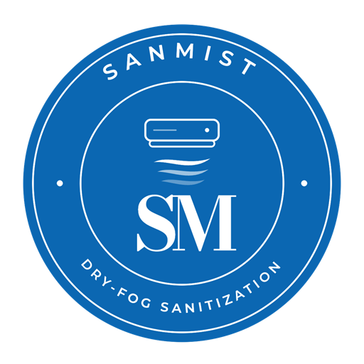

SANMISTTerms of Service
Effective Date: November 2026
By accessing or using the SanMist platform, you agree to these Terms of Service governing the use of this IoT-enabled automated dry-fog sanitization monitoring and compliance logging prototype.
1. Permitted Use & Prototype Scope
SanMist is provided as an academic and operational software prototype for monitoring telemetry, evaluating Saturation Efficiency Index (SEI) thresholds, and maintaining tamper-evident SHA-256 cycle logs. Automated labels and reports are decision-support records and do not independently replace physical safety checks or official regulatory inspection.
2. Operator Safety Responsibilities
Operators must verify that designated preparation zones are clear of personnel and exposed food before initiating any sanitization cycle and must maintain unobstructed access to physical emergency stop controls.
3. Accounts & Device Access
You are responsible for safeguarding your account credentials and device authentication keys. Unauthorized remote triggering, tampering with telemetry payloads, or attempting to access stations not paired to your account is prohibited.
4. Service Availability & Disclaimer
The platform is provided "as is" without warranties of uninterrupted availability, hardware fitness, or microbial efficacy. You may discontinue use and unpair stations at any time.